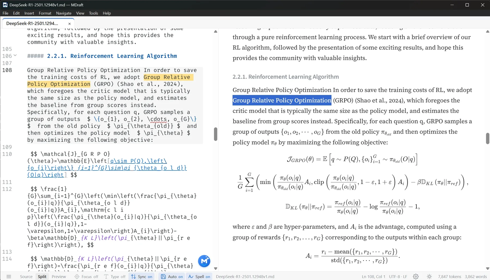
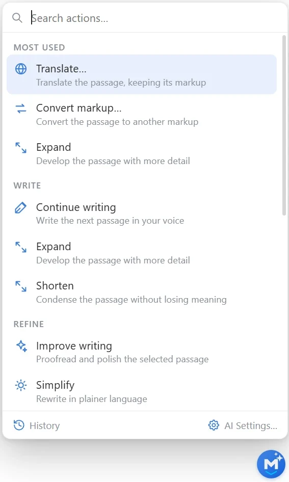
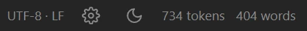
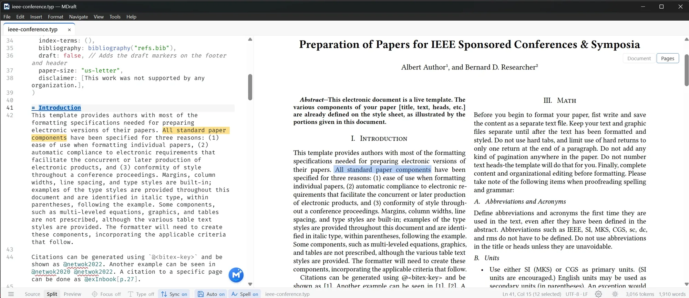
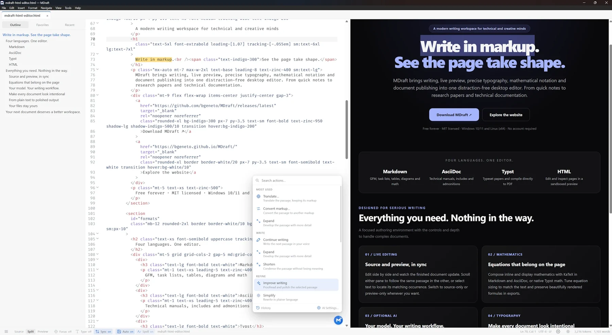

Start without a TeX installation.
Enable the bundled TeX distribution when you need it. Verified engine files download once; required TeX packages and fonts are fetched on demand and cached locally.
Free · Open source · Windows & Linux
Write research papers, lecture notes, documentation and more in Markdown, AsciiDoc, Typst, LaTeX or HTML. See your source and live preview side by side, adjust the typography, and export to PDF and other formats.
No account. No telemetry. No network request at start-up. MIT licensed.

Select text in either pane to highlight its match in the other. Scroll through your document and the two views follow along together.
Click the image to enlargeAI Assistant
Fourteen task-specific AI actions, a searchable palette and streaming answers you can apply, insert or open in a new tab. Point it at any OpenAI-compatible server or at Anthropic. AI Assistant is off by default.
ai-prompts.md opens as an
ordinary Markdown document; edit any action's section and the next request uses
it. Reset restores the built-ins.


734 tokens · 404 words. The status bar counts both, and the assistant
budgets in the same unit. The default context limit is 8,192 tokens; it can be raised
to 32,768. Ask and Continue trim to fit; a rewrite that does
not fit is refused with a reason.
Scroll precision
Scroll either pane and the other follows the corresponding text. Select a word or passage to highlight its match across the split, even in long documents.
Typst
Write Typst in the source pane and choose how to see it: a flowing document, or the compiled PDF as real pages. Both are linked to the text you are editing.
A flowing view with live word-level correspondence; click a paragraph and land on its source.
See the compiled PDF as selectable pages, including multi-column layouts. Click text to find its source.
Typst documents compile straight to PDF. No pandoc, no second document, no browser print dialog.

LaTeX
Write papers, theses and reports with your LaTeX source beside the compiled PDF. Work with real projects, inspect compiler messages and save the finished pages.
Enable the bundled TeX distribution when you need it. Verified engine files download once; required TeX packages and fonts are fetched on demand and cached locally.
Read selectable pages with the compiler's layout. Compile, cancel or enable auto-compile; toggle Logs to inspect messages, then return to your PDF and save it.
The main file stays the compilation root while you edit included chapters. Builds use current open buffers, including unsaved changes, alongside images and bibliography files.
LaTeX is opt-in. Initial engine setup downloads about 20 MiB; the first LaTeX Format Document downloads a separate verified formatter of about 1.7 MB. Later use reuses the cache, though new packages may need downloading. Document and bibliography contents stay on your device. An installed TeX distribution runs as a separate program and may download its own packages; shell escape remains disabled.
Read the LaTeX guideHTML editing
Build a page with its own CSS, images and JavaScript, and see it beside the source. Local stylesheets and images resolve relative to your document, so you can work with an existing page without setting up a development server.

The sandboxed preview runs the page's styles and scripts, apart from the editor. Use Split, Source or Preview view to give the task the room it needs.
Syntax highlighting and optional automatic closing tags help as you type. Format Document tidies the HTML in one undoable edit.
Navigate headings in the outline. Scroll the source and preview together, or select visible text to highlight its corresponding passage across the split.
Type an abbreviation and press Tab to build HTML structure or a CSS declaration. Emmet works offline, is enabled by default, and lets you move through the generated snippet fields with Tab.
ul>li*3 + Tab
<ul>
<li></li>
<li></li>
<li></li>
</ul>m10 + Tab (CSS)
margin: 10px;CSS abbreviations also work inside <style> and style attributes. Turn expansion off in Preferences › Editor if you prefer. With no abbreviation, Tab still indents; when the completion popup is open, Tab accepts its suggestion first.
Suggestions as you type. Complete HTML tags and attributes, and edit companion CSS, JavaScript, TypeScript and JSON files in their own syntax-aware source tabs. These companion source files do not have page previews.
Static HTML can be printed or saved as PDF directly. For pages whose final content depends on scripts, use the browser print path. Linked remote resources may use the network; the preview does not turn an HTML file into a hosted website.
Typography
MDraft pairs typefaces with carefully tuned math and code sizes, so prose, equations and listings sit comfortably together. Start with a preset inspired by book, editorial or geometric design, then adjust the details to suit your work.
Mathematics
Write inline or display equations alongside prose, tables and figures. Markdown and AsciiDoc render LaTeX-style math with KaTeX; Typst uses its own mathematical notation. See the result as you edit, in either theme, and carry it into PDF.
$…$, $$…$$,
\(…\) and \[…\], with currency such as R$50 and
US$5.00 left literal.
Five languages
Each language gets the preview it deserves, and each keeps its own source syntax. Open a Markdown note beside an AsciiDoc manual, a Typst paper and an HTML page — each tab remembers its caret, undo and scroll.
GFM tables, KaTeX, Mermaid, GitHub alerts, [TOC] and an outline that
follows the document.
# Heading
**bold** · [link](https://example.com)
| a | b |
|---|---|
Asciidoctor's admonitions, tables, listings, local includes and
latexmath / asciimath.
= Title
[NOTE]
This is an admonition.
image::figure.png[]Document and Pages views, direct PDF compilation and Insert / Format menus that write Typst, not Markdown.
= Introduction
#figure(
image("plot.svg"),
caption: [A plot],
)A sandboxed guest with its own CSS, images and scripts, kept apart from the editor and linked back by text.
<article lang="en">
<h1>The Quiet Machine</h1>
<p>Text and <em>markup</em>.</p>
</article>Compiled PDF pages, projects with chapters and bibliographies, command completion and source diagnostics. Explore the LaTeX workflow.
\documentclass{article}
\begin{document}
\section{Introduction}
\end{document}Durability
Each tab remembers where you left off. Recovery and file-change notices help protect your edits if MDraft closes unexpectedly or a file changes in another application.
Caret, undo history and scroll position stay with the tab. Reopen the last set on launch, in the same order and with the same tab active.
MDraft records edits as you work, including untitled documents. After an unexpected close, it restores recoverable changes as unsaved tabs.
If a file with unsaved edits changes or is deleted outside MDraft, choose whether to reload it, keep your version or save a copy.
Closing a document with unsaved changes offers Save, Discard or Cancel. Binary files and unsupported encodings are refused before editing.
Exports
Export Markdown and AsciiDoc to HTML or PDF, or print them without an extra converter. Typst documents compile directly to PDF with Typst. For DOCX, ODT, EPUB, LaTeX and other formats, use pandoc. MDraft can install both optional tools for you.
Static HTML can also be printed or saved as PDF; script-dependent pages use the browser print path. LaTeX documents compile and save directly to PDF.
Read the export guideQuiet by design
MDraft is a local application. It does not check for updates, activate a licence or contact a server when it opens. The network is used only for an action you take, and the page you are reading follows the same rule.
The AI Assistant is off by default and makes a request only after you enable it and press Generate or Fetch, or save an untitled document with filename suggestions on. Only Generate and the filename suggestion send document text. A pasted image URL can be downloaded, and an HTML document may request the resources its own markup links. Both follow your actions, rather than a background update check.
In the LaTeX workflow, initial setup, missing packages and the first use of the formatter require explicit downloads. Cached resources can be reused offline. Document and bibliography contents stay on your device. An external TeX distribution you select may make its own package downloads.
Download
Free and open source, under the MIT License. Windows 10/11 x64 and Linux x64. The latest release carries its notes, checksums and every artifact on one page.
Release notes for v{{VERSION}} and all downloads
Install with the NSIS setup or the MSI. The portable executable keeps its settings beside itself, so it can live on a USB stick.
Download for WindowsInstall the Debian package, run the AppImage, or take the bare binary. The package declares its WebKitGTK and GTK dependencies.
Download for LinuxSHA256SUMS-windows-amd64.txt
and
SHA256SUMS-linux-amd64.txt.
FAQ
If something is missing, open an issue on GitHub. The documentation covers the formats, the exports, the typography and the shortcuts in more detail.
Yes. MDraft is open source under the MIT License. There is no account, subscription, trial or paid tier.
Yes. Local editing, previewing, spelling and exports work offline once the required tools and resources are available. MDraft makes no request at start-up. Installing optional tools, downloading a pasted image or using the enabled AI Assistant requires the action you choose. HTML pages may load remote resources. LaTeX setup and missing packages also require downloads; cached resources can be reused offline.
Windows 10 and 11 on x64, and Linux on x64 as a .deb, an AppImage or a bare binary. macOS is not currently published; the source includes macOS support, but the release page carries Windows and Linux builds only.
Not for Markdown, AsciiDoc or HTML. Typst documents need the Typst compiler, which MDraft can install for you on Windows and Linux. DOCX, ODT, EPUB, LaTeX and the other pandoc formats need pandoc, which MDraft can also install. Neither is required to edit or preview the other languages.
No. It is off by default, makes no request and reads no stored key until you open its settings or use an action. You can point it at a local server with no key, or at any OpenAI-compatible endpoint or Anthropic with your own key. The editor works without it.
No. There is no telemetry, no account, no activation and no update check. Settings and documents stay on your machine, and the AI Assistant makes a request only when you ask it to.
On Windows, in the application data folder for io.github.bgeneto.mdraft; on Linux, in the corresponding configuration folder. The portable Windows build keeps settings beside the executable. AI prompt overrides live in ai-prompts.md beside settings.json.
Yes. The MIT License permits commercial use, modification and redistribution, provided the copyright and permission notice are kept.
Every release publishes SHA256SUMS-windows-amd64.txt and SHA256SUMS-linux-amd64.txt. Compare the checksum of the file you downloaded with the matching line in the release assets.
Yes. The bundled TeX distribution needs no separate TeX installation. Enable it to download verified engine files; required packages and fonts are fetched on demand and cached. You can instead select a validated installed TeX distribution. It runs as a separate program and may download its own packages. Document and bibliography contents stay local.
Edit HTML with syntax highlighting, optional tag closing, Emmet abbreviation expansion with Tab and document formatting. Preview the page with its own CSS, images and scripts, navigate its headings and match visible text between source and preview. Print static HTML or save it as PDF; use the browser print path for pages that depend on scripts. Tag and attribute completion is also included.
Try it on your next document
A free, open-source editor for Windows and Linux, with live preview, mathematics and carefully designed typography.